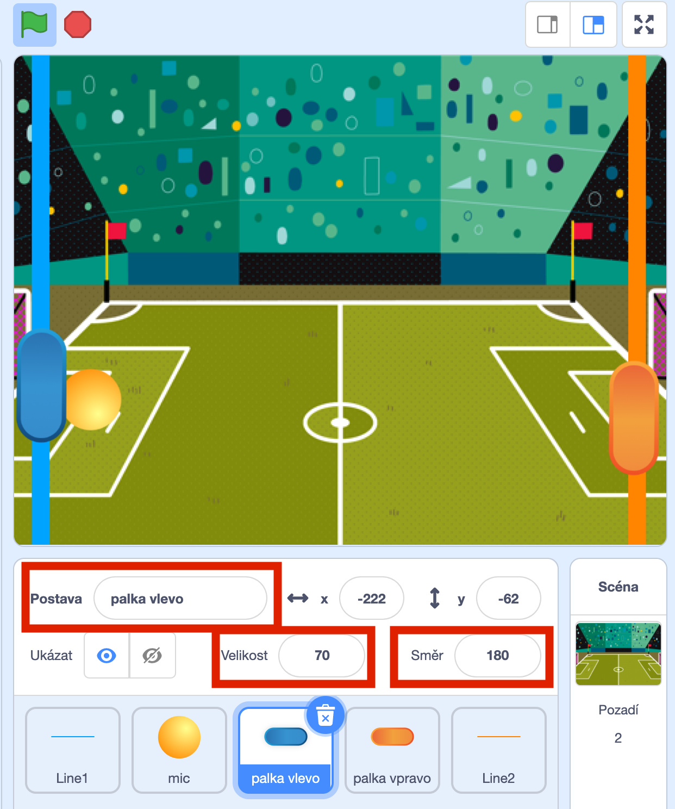

Pong¶
Posledně jsme si říkali, že by byla sranda si zahrát nějakou hru proti sobě na jednom počítači. Pojďme si naprogramovat a zahrát pong! Pong je něco jako ping-pong, jen o hodně jednodušší.
Na skoro hotový pong se můžete podívat na https://scratch.mit.edu/projects/436444452.
Pokud si s některým krokem nebudete vědět rady, mrkněte, jak to mám udělané já.
Následuje návod, jak si naprogramovat základní vlastní verzi pongu. Tento týden rozpohybujeme míček a naučíme ho odrážet od pálek, příští týden přidáme gúly a body!
Tak směle do toho.
Od strany ke straně¶
Začneme tím, co jsme dělali posledně. Rozpohybujte míček tak, aby se po zmáčknnutí  pohyboval a odrážel od stěny. Budete k tomu potřebovat následující bloky.
pohyboval a odrážel od stěny. Budete k tomu potřebovat následující bloky.

Pálka¶
Teď na obrazovku přidáme levou pálku a naučíme ji pohybovat se nahoru po stisknutí klávesy "q" a dolů po stisknutí klávesy "a".
Začněte tím, že přidáte postavu pálky a pojmenujete ji "palka vlevo". Nastavte vhodnou velikost a pálku můžete otočit nastavením směru. Na následujícím obrázku jsem vám vyznačil červenými obdélníky, kde se nastavuje jméno, velikost a otočení postavy.

Podmínka¶
Budeme k tomu potřebovat nové programátorské slovo "podmínka". Blok podmínky se provede jenom v tom případě, kdy je podmínka splněna. Ukážeme si to na příkladu.
V programu níže - když je klávesa "a" stisknuta, tak změň y o -10. Tedy se přesně provede, co potřebujeme udělat s pálkou, posune se dolů.

Nahoru a dolů¶
Zkuste nyní zkombinovat bloky tak, aby pálka jezdila nahoru po stisknutí "q" a dolů po stisknutí "a". Nezapomeňte si navolit k programování pálku, aby se vám nestalo, že budete jezdit nahoru a dolů s míčkem.
Bloky, které budete potřebovat.
Druhá pálka¶
Když máme jednu pálku nalevo hotovou, není nic jednoduššího, než ji zkopírovat, přesunout napravo a nastavit jí, že se má pohybovat nahoru po stisknutí šipky nahoru a dolů po stisknutí šipky dolů.
Pohrajte si s s hodnotou v bloku "změň y o 10" a sledujte, jak se mění rychlost pohybu pálky.
První hráč hraje vlevo a druhý hráč hraje vpravo.
Odraz od pálky¶
Teď potřebujeme, aby se míček odrazil od pálky, když do ní narazí. Všechny bloky, které použijeme, již známe. Vyberte míček a naprogramujte ho tak, aby se odrazil od levé pálky.
Zvládnete doplnit další kousek programu, aby se míček odrazil od pálky vpravo?
Příští týden budeme pokračovat. Ukážeme si, jak přidat góly a jak počítat body!